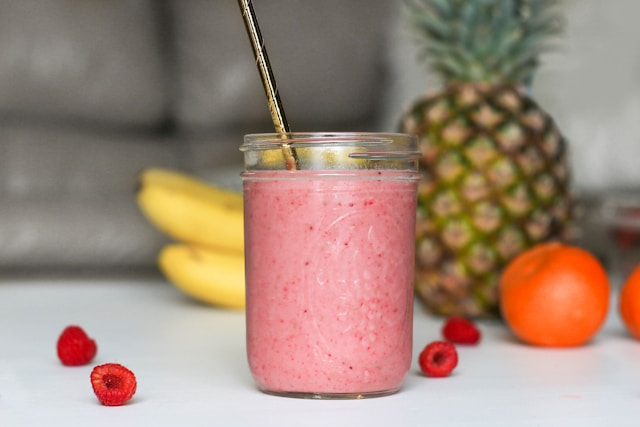

Stekt ris är en läcker och mångsidig rätt som har sitt ursprung i
det asiatiska köket. Den består vanligtvis av kokt ris som steks
tillsammans med en härlig blandning av grönsaker, kött eller
skaldjur, ägg och olika kryddor och såser.

Frukt Smoothie
En frukt smoothie är en uppfriskande och näringsrik dryck som är
enkel att göra och perfekt för att njuta av frukten på ett snabbt
och läckert sätt. Otroligt gott som frukost eller mellan mål!